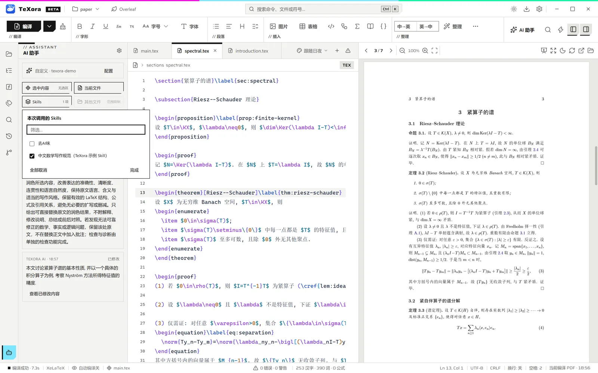
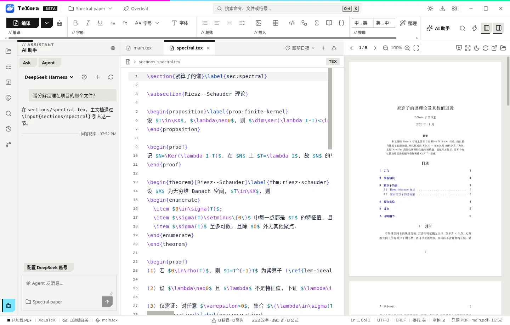

// 01 受控 AI
AI 提建议，你做决定
Ask 模式保留上下文选择、Skills 和逐处 Diff。切换到 Agent，可以在项目中使用本机安装的 Codex、Claude Code 或 DeepSeek Harness，点击登录后，在聊天输入框发送消息，并从最近对话继续写作。DeepSeek 在当前项目目录运行，三种工具共用聊天界面。输入框显示项目名称，回答末尾显示完成时间。
- 四个上下文入口：选中内容、当前文件、Skills、其他文件，读取范围受设置约束
- 润色与翻译给出逐处 Diff，确认后才替换；检查与解释只作为回答展示
- 模型回复里夹带说明、无法可靠分离时，直接拒绝进入 Diff，不把杂质混进正文
- 自带密钥，支持 DeepSeek、OpenAI、Claude、Gemini、Kimi 与任意 OpenAI 兼容接口；密钥由系统加密保存
- 导入期刊规范、个人宏习惯等 Skills，按需启用


画面中的 AI 回答为演示示例。使用 AI 时，所选内容会发送至你配置的模型服务商。